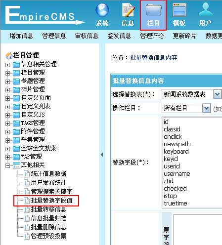
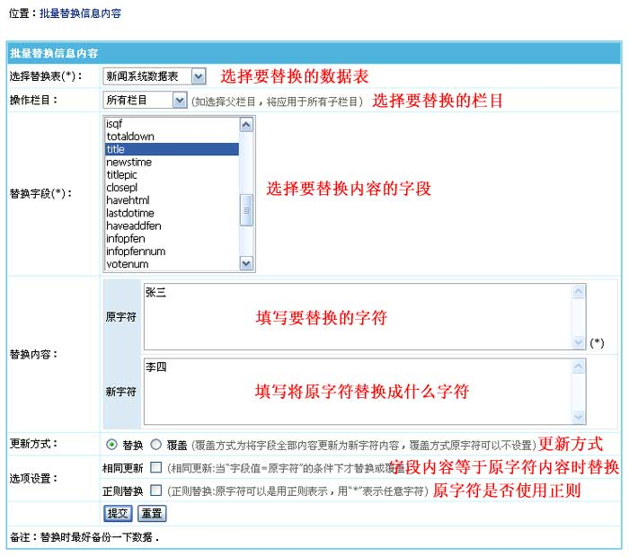

批量替换字段值
一、批量替换字段值功能介绍：
批量替换字段值为对信息表字段的内容进行批量替换。
二、批量替换字段值：
(一)、登录后台，单击“
栏目
”菜单，选择“
批量替换字段值
”子菜单，进入批量替换字段值界面：

(二)、进入批量替换字段值界面：

选择替换表
选择要替换哪个表的字段 。
操作栏目
选择只替换哪个栏目的信息。
替换字段
选择要替换内容的字段。
替换内容
原字符：
填写要替换的字符。
新字符：
填写将原字符替换成什么字符。
更新方式
替换：
为将内容里的原字符替换成新字符。
覆盖：
为将字段全部内容更新为新字符内容，覆盖方式原字符可以不填。
选项设置
相同更新：
当字段内容等于原字符内容时替换。
正则替换：
指定原字符内容是采用正则。